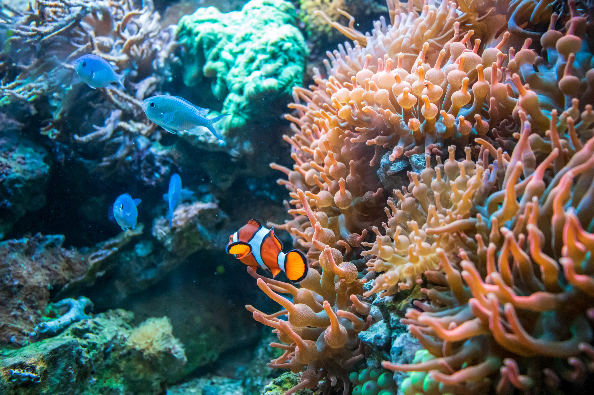
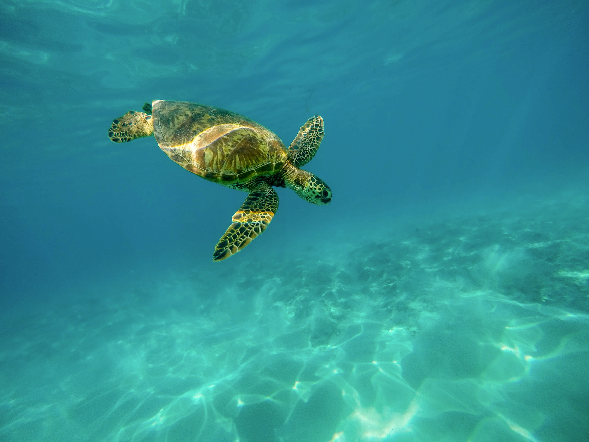

The sunlight zone, or euphotic zone, is the ocean's uppermost layer where sunlight penetrates to support photosynthesis and abundant marine life. This zone extends from the ocean surface down to about 200 meters (656 feet), where light absorption by water limits further penetration. Phytoplankton thrive here, producing much of Earth's oxygen and forming the base of the food web for fish, corals, and mammals. Temperature fluctuates most in this dynamic layer, driving high biodiversity.



The sunlight zone (0-200m) bursts with life thanks to sunlight fueling photosynthesis. Tiny phytoplankton form the base of the food web, producing 65% of Earth's oxygen while feeding zooplankton, small fish like sardines and tuna, and massive filter-feeders like blue whales and humpback whales that breach the surface for air. Sea turtles (green, loggerhead) graze seagrass meadows, dolphins hunt in playful pods, and mackerel sharks patrol vibrant coral reefs—biodiversity hotspots hosting colorful fish and invertebrates. This thin layer contains 90% of all ocean life, with nightly migrations bringing deep-sea creatures up to feed on surface plankton.